Arquitetura IPsec: Um Ecossistema de Protocolos
O IPsec não é um protocolo monolítico, mas sim uma suíte de tecnologias projetadas para trabalhar em conjunto. Para compreender seu funcionamento, é crucial entender não apenas cada protocolo isoladamente, mas como eles interagem e se integram para construir o framework de segurança descrito pela Arquitetura IPsec.
A Arquitetura, em si, não especifica detalhes de baixo nível como os formatos de cabeçalho. Em vez disso, ela define as capacidades que um sistema (seja um host ou um gateway) deve oferecer e a semântica das interações entre os componentes. Por exemplo, a arquitetura dita que o sistema deve ser capaz de prover confidencialidade (usando ESP) e integridade (usando AH ou ESP), mas delega os detalhes da implementação para documentos específicos.
A Separação de Responsabilidades
Uma das características mais poderosas da arquitetura IPsec é sua modularidade. Essa separação de responsabilidades garante que o framework seja flexível e possa evoluir ao longo do tempo. As principais divisões são:
- Arquitetura vs. Protocolos (AH e ESP): Enquanto a arquitetura define o que deve ser feito, os documentos do AH (Authentication Header) e do ESP (Encapsulating Security Payload) definem como isso é feito, especificando o formato exato dos protocolos, os serviços que eles provêm e as regras de processamento de pacotes.
- Protocolos vs. Transformações: Os documentos do AH e ESP, por sua vez, não definem os algoritmos criptográficos a serem usados. Essa função cabe às Transformações (Transforms). Uma transformação define em detalhes a operação de segurança aplicada aos dados, incluindo o algoritmo (ex: AES-GCM, ChaCha-20), o tamanho das chaves, como elas são derivadas e qualquer outra informação específica. Essa separação permite que novas transformações sejam adicionadas à medida que algoritmos antigos se tornam inseguros, sem que seja necessário modificar os protocolos base (AH e ESP).
Gerenciamento de Chaves: O Papel do IKEv2
A tarefa de autenticar participantes, negociar parâmetros de segurança e gerar chaves secretas de forma automática é delegada a um componente essencial da suíte: o IKEv2 (Internet Key Exchange version 2).
Mantendo o princípio da modularidade da arquitetura, o IKEv2 opera como um protocolo de plano de controle, cuja única função é construir e manter as Associações de Segurança (SAs). Ele é distinto dos protocolos de plano de dados, como o AH e o ESP, que utilizam as SAs criadas pelo IKEv2 para efetivamente proteger os pacotes. Em essência, enquanto AH e ESP são os "soldados" que protegem o tráfego, o IKEv2 é o "engenheiro" que constrói o túnel seguro por onde esse tráfego passará.
O Papel Crítico da Política
Finalmente, um componente que governa todo o framework é a Política de Segurança. A política é o conjunto de regras que determina se duas entidades podem se comunicar e, em caso afirmativo, quais transformações e protocolos devem ser usados. Uma política mal configurada pode impedir completamente a comunicação entre dois sistemas. Embora no passado a configuração de políticas não fosse padronizada, hoje ela é uma parte central e bem estabelecida de qualquer implementação de IPsec.
Com este mapa da arquitetura em mente, podemos agora aprofundar nos seus componentes lógicos centrais: a Base de Dados de Políticas de Segurança (SPD) e a Base de Dados de Associações de Segurança (SAD).
Os Pilares da Arquitetura: Política e Associação
A arquitetura do IPsec, em seu núcleo, é governada por dois componentes lógicos: a Política de Segurança (SP) e a Associação de Segurança (SA). Se imaginarmos o IPsec como um sistema de controle de acesso, a Política de Segurança é o conjunto de regras que define o que deve ser protegido, enquanto a Associação de Segurança é o que diz como fazer a proteção de um pacote.
A Política de Segurança (SP): O Cérebro do IPsec
A Política de Segurança é o componente que efetivamente determina quais protocolos (AH ou ESP), modos e algoritmos devem ser usados para cada tipo de pacote. Todas as implementações do IPsec armazenam essas políticas em um banco de dados chamado SPD (Security Policy Database).
Para cada pacote, seja ele de entrada ou saída, a SPD é consultada para determinar seu tratamento. Uma política, em sua essência, mapeia um determinado tipo de tráfego a uma ação específica. As três ações possíveis são:
- DISCARD: Esta ação bloqueia o pacote imediatamente, sem qualquer processamento adicional. É usada para implementar políticas de bloqueio explícitas (semelhante a um firewall) ou para proibir tráfego de origens conhecidamente maliciosas.
- BYPASS: Esta ação instrui o sistema a não aplicar qualquer proteção do IPsec ao pacote. O tráfego segue seu fluxo normal pela pilha de protocolos, em texto claro. É utilizada para tráfego que não necessita de segurança (como DNS para um servidor local) ou para tráfego que não pode ser protegido, como as próprias mensagens do IKEv2 usadas para negociar as chaves.
- PROTECT: Esta é a ação que efetivamente ativa o IPsec. Ela determina que o pacote deve ser protegido usando os serviços de uma ou mais Associações de Segurança (SAs). No tráfego de saída, o pacote será encapsulado com ESP ou AH. No tráfego de entrada, ele será decapsulado e verificado.
Seletores: Como a Política Identifica o Tráfego
A SPD funciona como uma lista de regras, onde cada regra é associada a um conjunto de Seletores. São esses seletores que permitem ao sistema identificar e classificar os pacotes. Se um pacote corresponde aos seletores de uma política, as regras dessa política são aplicadas a ele.
Os seletores são extraídos dos cabeçalhos das camadas de rede e transporte e podem ser: Endereço de origem, Protocolo da Camada de Transporte ou Portas, entre outros.
Gerenciamento da Política
A SPD precisa de uma interface de gerenciamento para permitir que administradores possam adicionar, modificar e remover políticas. Padrões de automação de rede como NETCONF/YANG são frequentemente utilizados para configurar políticas de segurança de forma padronizada em roteadores e firewalls de diferentes fabricantes.
Com a Política de Segurança e seus seletores definidos, o próximo passo é entender o "contrato" que executa a proteção: a Associação de Segurança (SA).
A Associação de Segurança (SA): O Contrato de Proteção
Quando a decisão da política é proteger o tráfego, ela aciona o uso de uma Associação de Segurança. A SA, mantida na SAD (Security Association Database), é o acordo técnico entre as duas partes da comunicação. É este "contrato" que especifica os detalhes operacionais: o protocolo exato, os algoritmos de transformação, as chaves criptográficas e a duração de sua validade.
Uma característica fundamental das SAs é que elas são unidirecionais (simplex) e específicas por protocolo. Isso significa que, para uma comunicação segura e bidirecional usando ESP, por exemplo, cada ponta da comunicação manterá duas SAs: uma para o tráfego de saída e outra para o de entrada. Se AH e ESP fossem usados simultaneamente, seriam necessárias SAs separadas para cada protocolo, ou seja, seriam necessários 4 canais distintos de comunicação.
A Anatomia de uma SA
Para que a Associação de Segurança (SA) cumpra seu papel de "contrato" técnico, ela é estruturada como um registro que contém um conjunto de parâmetros bem definidos. São esses parâmetros que, juntos, fornecem todas as informações necessárias para que um sistema saiba exatamente como proteger e verificar os pacotes de um fluxo de dados específico. Dentre esses componentes, o mais fundamental para o processamento de pacotes é o seu identificador único: o Security Parameter Index (SPI).
O Security Parameter Index (SPI)
Dentro da anatomia de uma Associação de Segurança (SA), o Security Parameter Index (SPI) é o elemento mais importante para o processamento de pacotes. Trata-se de um número de 32 bits que funciona como um "rótulo" ou "etiqueta de identificação" para a SA.
O Problema: Como o Receptor Identifica a SA Correta?
Para entender a necessidade do SPI, considere o fluxo de dados:
- O Remetente: Para enviar um pacote, o host de origem consulta sua SPD (Security Policy Database) usando os Seletores (IPs, portas, etc.) para encontrar a política correta. Essa política aponta para a SA de saída na SAD (Security Association Database). O sistema então usa os parâmetros dessa SA (algoritmos, chaves) para proteger o pacote.
- O Receptor: O pacote chega protegido. O receptor precisa encontrar a SA de entrada correspondente para poder verificá-lo e decifrá-lo.
Aqui surge o problema: o receptor não pode usar os mesmos Seletores (como as portas TCP/UDP) para encontrar a SA correta, pois essas informações podem estar criptografadas dentro do payload do ESP, inacessíveis para uma primeira análise.
A Solução: O SPI como Etiqueta Externa
Para resolver isso de forma eficiente, o SPI é inserido no cabeçalho do protocolo IPsec (seja AH ou ESP), ficando sempre visível. Ele funciona como uma etiqueta externa que diz ao receptor: "Para processar este pacote, use o contrato número X".
O receptor então usa uma combinação de três informações para fazer uma busca extremamente rápida em sua SAD e encontrar a SA exata:
- O SPI contido no cabeçalho do pacote recebido.
- O Endereço de Destino (o seu próprio endereço IP).
- O Protocolo de Segurança (indicando se é um pacote AH ou ESP).
Essa tupla <SPI, Endereço de Destino, Protocolo> garante a identificação única da SA correta.
Quem Garante a Unicidade do SPI?
Um ponto crucial é que o valor do SPI é sempre escolhido pelo receptor da SA. Durante a negociação com o IKEv2, o Host B informa ao Host A qual valor de SPI ele deve usar nos pacotes que enviar. Da mesma forma, o Host A informa ao Host B qual SPI usar na direção oposta.
É responsabilidade de cada sistema garantir que os SPIs que ele aloca sejam únicos para um determinado protocolo (AH ou ESP) e endereço de destino. Se essa unicidade não for garantida, o receptor poderá usar a SA errada (com chaves e algoritmos incorretos), resultando em falhas de segurança. Uma vez que uma SA expira, seu SPI pode ser reutilizado para uma nova SA no futuro.
O Ciclo de Vida de uma SA (Gerenciamento)
Como citado antes, uma SA não é permanente; ela possui um ciclo de vida que é gerenciado através de sua criação e exclusão.
Criação de SAs
A criação de uma SA, em geral, é criada da seguinte forma: Quando a SPD (Política de Segurança) determina que um pacote precisa de proteção e não existe uma SA válida, o sistema invoca o IKEv2. O IKEv2 então negocia automaticamente todos os parâmetros com o outro par, gera chaves secretas frescas e seguras, e instala a SA em ambos os lados da comunicação.
Exclusão e Rekeying (Renovação de Chaves)
As SAs são projetadas para serem temporárias, sendo excluídas por diversas razões, como:
- O tempo de vida (definido em tempo ou volume de dados) expirou.
- Suspeita de que as chaves foram comprometidas.
- Um dos pares solicita o término da SA.
Para manter a segurança, as chaves criptográficas devem ser renovadas periodicamente. O IPsec não "atualiza" a chave de uma SA existente. Em vez disso, ele realiza um processo chamado rekeying (ou rechaveamento).
O IKEv2 também é responsável por esse processo. De forma inteligente, ele inicia a negociação de uma nova SA um pouco antes da SA atual expirar. Uma vez que a nova SA está pronta e instalada, o tráfego passa a fluir por ela, e só então a SA antiga é removida. Este princípio, conhecido como "make-before-break" (criar antes de quebrar), garante que não haja interrupção na comunicação durante a transição, tornando o processo de renovação de chaves transparente para o usuário.
O Fluxo de Processamento do IPsec
Agora que entendemos os dois pilares da arquitetura – a SPD que decide e a SAD que contém os "contratos" (SAs) – podemos unir esses conceitos para entender a jornada de um pacote através do framework IPsec. O processo é dividido em duas operações distintas: o processamento de saída e o de entrada.
Processamento de Saída (Outbound)
Este é o fluxo para um pacote que está saindo do seu sistema:
- Consulta à Política: Um pacote gerado por uma aplicação desce pela pilha de protocolos e chega à camada de rede. Antes de ser enviado, ele é interceptado pelo IPsec e sua informação (IPs, portas, etc.) é usada para consultar a SPD.
-
Decisão da SPD: Com base nos
seletores do pacote, a SPD determina uma de três
ações:
- DISCARD (Descartar): O pacote é imediatamente descartado e não é enviado.
- BYPASS (Ignorar): O IPsec não é aplicado. O pacote segue seu fluxo normal e é enviado em texto claro.
- PROTECT (Proteger): O IPsec deve ser aplicado. O sistema prossegue para o próximo passo.
-
Aplicação da Segurança: Se a ação
for PROTECT, o sistema precisa de uma SA.
- Caso A (SA já existe): A SPD aponta para a SA correspondente na SAD. Os parâmetros dessa SA (algoritmos, chaves) são usados para proteger o pacote, adicionando os cabeçalhos AH ou ESP.
- Caso B (SA não existe): O pacote é colocado em espera. O sistema invoca o IKEv2 para negociar uma nova SA com o destino. Apenas após a criação bem-sucedida da SA é que o pacote é protegido e enviado.
- Envio: O pacote, agora protegido (ou em texto claro, no caso de bypass), é finalmente enviado para a rede.
Processamento de Entrada (Inbound)
O fluxo de entrada é um pouco mais complexo, pois o sistema precisa primeiro identificar o tipo de pacote que está recebendo.
Cenário 1: Pacote IP Comum (Sem cabeçalho IPsec)
- O pacote é recebido e, por não ter cabeçalhos IPsec, é imediatamente verificado contra a SPD.
-
A SPD toma uma decisão:
- DISCARD: O pacote é descartado.
- BYPASS: A política permite a entrada deste tráfego não protegido. O pacote é passado para as camadas superiores (TCP/UDP).
- PROTECT: Este é um erro de política. A SPD esperava um pacote protegido, mas recebeu um em texto claro. Por segurança, o pacote é descartado.
Cenário 2: Pacote IPsec (Com cabeçalho AH ou ESP)
- Identificação da SA: O sistema identifica o pacote como IPsec. Ele extrai a tupla <SPI, Endereço de Destino, Protocolo> do cabeçalho.
- Busca na SAD: A tupla é usada para encontrar a SA correspondente na SAD. Se nenhuma SA for encontrada, o pacote é descartado.
- Verificação de Segurança: Usando os parâmetros da SA encontrada (chaves, algoritmos), o sistema processa o pacote: ele verifica o hash de integridade e/ou decifra o conteúdo. Se qualquer uma dessas verificações falhar, o pacote é descartado.
- Validação da Política (Verificação Reversa): Após o pacote ser "desembrulhado" e seu conteúdo original revelado, ele passa por uma verificação final contra a SPD. Este passo garante que a proteção que ele recebeu condiz com a proteção que a política exigia. Isso previne ataques onde um agressor tenta forçar o uso de uma proteção mais fraca do que a definida. Se a validação falhar, o pacote é descartado.
- Entrega: Se todas as verificações passarem, os cabeçalhos IPsec são removidos e o pacote original é entregue à camada superior para processamento.
Desafios Operacionais da Arquitetura
Além do fluxo principal de processamento, a arquitetura do IPsec precisa lidar com realidades práticas da comunicação em redes IP para funcionar de forma robusta. Duas das mais importantes são a fragmentação de pacotes e o tratamento de mensagens de erro ICMP.
Fragmentação e o MTU
Uma regra fundamental do IPsec é que ele, por si só, não fragmenta nem remonta pacotes. Essa é uma tarefa da camada IP. No entanto, o IPsec influencia diretamente esse processo.
- O Problema: Ao adicionar seus próprios cabeçalhos (AH ou ESP), o IPsec aumenta o tamanho do pacote original. Se o pacote final exceder a MTU (Maximum Transmission Unit) de um link no caminho até o destino, a fragmentação será inevitável.
- A Prática Recomendada: A abordagem mais segura e eficiente é conhecida como "fragment-before-encrypt" (fragmentar antes de criptografar). A implementação do IPsec deve participar da descoberta da PMTU (Path MTU) para saber o tamanho máximo do pacote que pode enviar. Com essa informação, o sistema pode fragmentar o pacote original antes de aplicar a proteção IPsec. Isso evita problemas de desempenho e segurança que podem surgir ao se fragmentar um pacote que já está criptografado.
O Tratamento de Mensagens ICMP
O ICMP (Internet Control Message Protocol) é vital para o diagnóstico e a operação da rede. O IPsec, especialmente em modo túnel, pode complicar o seu funcionamento.
- O Problema: O desafio surge principalmente em modo túnel, quando um gateway intermediário encapsula o pacote. Se um roteador na internet precisar enviar uma mensagem de erro ICMP (como "Host Inacessível") de volta, essa mensagem será destinada ao gateway (o endereço do cabeçalho externo). O ICMP, por padrão, inclui apenas uma pequena parte do pacote original que causou o erro. Por causa do encapsulamento, essa pequena parte conterá apenas o cabeçalho externo, não o cabeçalho interno com o endereço do host que realmente originou o tráfego. Com isso, o gateway recebe uma mensagem de erro sem saber para qual de seus hosts internos ela se destina.
- A Solução (em alto nível): Para contornar isso, as implementações de IPsec precisam manter estados adicionais que permitam mapear as mensagens ICMP recebidas de volta para as conexões internas corretas, garantindo que os erros de rede possam ser devidamente diagnosticados.
Conclusão
Em resumo, a arquitetura do IPsec opera com base na interação fundamental entre a SPD, que define a política de segurança para cada pacote, e a SAD, que armazena os detalhes técnicos da proteção nas Associações de Segurança (SAs). Essa estrutura, que separa a decisão da execução, é o que confere ao IPsec sua flexibilidade e poder.
Agora que entendemos como essa estrutura gerencia a segurança, vamos analisar os modos em que o IPsec pode operar: o modo Transporte e o modo Túnel.